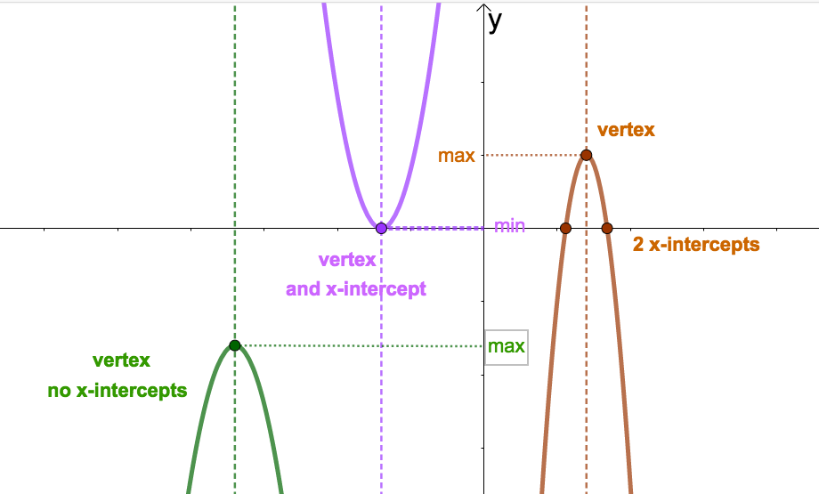
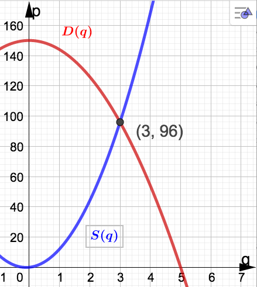
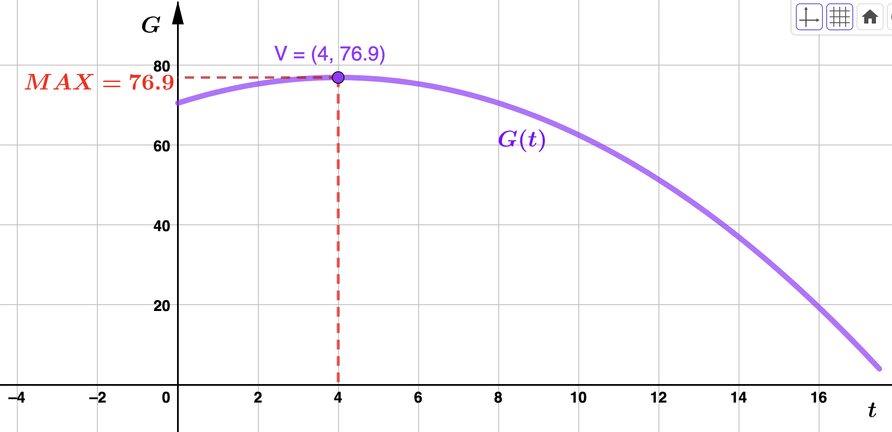

Section 2.4 Quardratic Functions and Applications
Subsection 2.4.1 Basics About Quadratics
Every parabola has a high or low point called the vertex. The vertical line through the vertex is called the axis of symmetry. Note that every quadratic function has a maximum or minimum output value, depending on the direction the parabola opens. This max or min value is the \(y\)-coordinate of the vertex. Also note that a quadratic could have 0,1, or 2 \(x\)-intercepts. See the picture below for a couple examples. If a quadratic has one \(x\)-intercept, notice that it must be the vertex.

Following are some facts about the quadratic \(f(x)= ax^2 +bx + c\) and its graph:
- The parabola opens up if \(a > 0\) and down if \(a < 0\)
- \(\displaystyle \textrm{Vertex} = \left(-\dfrac{b}{2a}, f\left(-\dfrac{b}{2a}\right)\right)\)
- The equation of the axis of the symmetry is \(x=-\dfrac{b}{2a}\)
- Every quadratic has either a maximum or minimum value given by \(f\left(-\dfrac{b}{2a}\right)\text{.}\)
- Parabolas can have 0,1, or 2 \(x\)-intercepts. To find them, if any exist, solve \(f(x) = 0\)
The last bullet point above says that to find the \(x-\)intercepts of a quadratic, you solve the quadratic equation \(ax^2 + bx + c = 0\text{.}\) Remember that solutions can always be found (or determined not to exist as real numbers) using the quadratic formula
\begin{equation*}
x=\dfrac{-b \pm \sqrt{b^2 - 4ac}}{2a}
\end{equation*}
Consider the quadratic \(f(x)= x^2 + 4x +3\text{.}\) This parabola opens up since \(a=1 > 0\text{.}\) Beacuse the parabola opens up \(f(x)\) has a minimum ouptut value given by the \(y-\)coordinate of the vertex. Let's find the vertex. Using the formula given above for the \(x-\)coordinate (with \(a=1\) and \(b=4\)) gives
\begin{equation*}
x = -\dfrac{4}{2 \cdot 1} = - 2
\end{equation*}
Evaluating, the \(y-\)coordinate is then \(f(-2) = -1\) so the vertex is \((-2,-1)\) and we can conclude that \(f(x)\) has a minimum value value of -1 (the smallest output value). Observe that the axis of symmetry is the vertical line \(x=-2\text{.}\) To find the \(x-\)intercepts we solve
\begin{align*}
x^2 + 4x +3 \amp = 0 \\
(x+3)(x+1) \amp = 0
\end{align*}
to get \(x=-3\) and \(x=-1\text{.}\) Hence, the \(x-\)intercepts are \((-3,0)\) and \((-1,0)\text{.}\)
Every quadratic can be written in vertex form \(f(x) = a(x-h)^2 + k\text{,}\) where \((h,k)\) is the vertex. So, \(h=-\dfrac{b}{2a}\) and \(k=f\left(-\dfrac{b}{2a}\right)\text{.}\) Using the method of completing the square, the quadratic in the above example has vertex form
\begin{equation*}
f(x) = x^2 + 4x +3 = \left(x^2 + 4x + \left(\dfrac{4}{2}\right)^2\right) + 3 - \left(\dfrac{4}{2}\right)^2 = (x+2)^2 - 1
\end{equation*}
so that \(h=-2\) and \(k=-1\) as expected.
Subsection 2.4.2 Applications With Quadratics
Recall the definitions for supply, demand and equilibrium given in Section 1.3. Both supply and demand functions in some given market relate price \(p\) and quantity \(q\text{,}\) and we often use \(q\) as the input variable so that the supply and demand functions have the form \(p=S(q)\) and \(p=D(q)\text{.}\) The role of these variables can change, however, so make sure you read the problems carefully.
Definition 2.4.2.
The point at which \(S(q) = D(q)\) (supply equals demand) in a market is called the equilibrium point.Geometrically, the equilibrium point is the piont where the graph of supply and demand intersect.
Example 2.4.3.
The equilibrium price and quantity occurs when \(D(q) = S(q)\text{.}\) We solve:
\begin{align*}
D(q) \amp = S(q) \\
150 - 6q^2 \amp = 10q^2 + 2q \\
16q^2 + 2q - 150 \amp = 0
\end{align*}
To solve this equation it is best to use the quadratic formula:
\begin{equation*}
q = \dfrac{-b \pm \sqrt{b^2-4ac}}{2a}
\end{equation*}
Substitute the correct values for \(a,b\text{,}\) and \(c\) for homework. You should find two solutions: - \(q = -\dfrac{25}{8}\) which we can disregard (why?)
- \(q=3\) which is a valid solution for this problem

Example 2.4.4.
\begin{equation*}
G(t) = 3.2t - .4t^2 + 70.5
\end{equation*}
where \(t\) represents the number of months after the study began. How many months into the study did gas powered cars reach their maximum sales? What was the maximum number of cars sold in a month during the study? Solution.Since \(a = -.4 < 0\text{,}\) the quadratic \(G(t)\) does indeed have a maximum value. We need the vertex:
\begin{equation*}
t = -\dfrac{b}{2a} = \dfrac{3.2}{(2)(.4)} = 4
\end{equation*}
and \(G(4) = 76.9\) so that the vertex is \((4,76.9)\text{.}\) Therefore, the maxmimum number of gas powered cars sold on Echo Island occurred 4 months after the study. The maximum number sold was 769 cars. 
Example 2.4.5.
\begin{equation*}
\overline{C}(s) = .1s^2 - .9s + 2.915.
\end{equation*}
How many sofas should Sofa King produce in order to minimize average cost? Write a sentence or two interpreting your answer. Find the cost funtion, \(C(s)\text{.}\) Answer.To minimize average cost, Sofa King should produce 450 sofas. At this production level, their (minimum) average cost is $89 per sofa. Sofa King's cost function is \(C(s) = .1s^3 -.9s^2 + 2.915s\) (in hundreds of dollars).
Example 2.4.6.
As a function of \(x\text{,}\) Kennyland's ticket price is \(p(x) = 25 + x\) and quantity is givne by \(q(x) = 40,000 - 1,000x\text{.}\) This means
\begin{align*}
R(x) \amp = p(x)q(x) \\
R(x) \amp = (25+x))(40,000 - 1,000x) \\
R(x) \amp = -1,000x^2 + 15,000x + 1,000,000
\end{align*}
The vertex of \(R(x)\) is \((7.5,1056250)\text{.}\) Since \(p(7.5) = 25 + 7.5 = 32.5\) Kennyland should charge $32.50 for admission in order to maximize daily revenue.